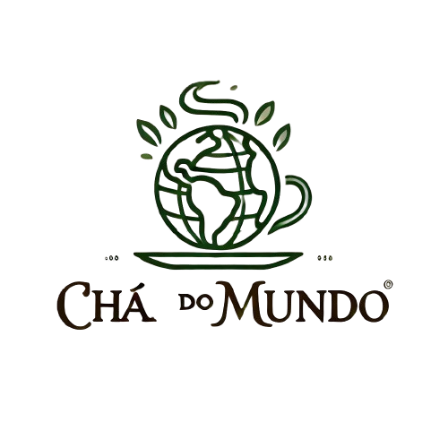

O "Chá do Mundo" é um clube de assinatura que oferece mensalmente uma seleção de chás artesanais e orgânicos de diversas regiões do mundo, acompanhada de fichas de degustação e dicas de preparo. Além dos chás, com o COMBO+ os assinantes recebem ocasionalmente acessórios como infusores e canecas personalizadas. Transforme sua rotina em uma jornada de sabores e descobertas culturais com o Chá do Mundo.
 Assine por 12x de R$150,00* Assine só o básico*Você gosta de ler
CHÁS
Chá Verde Sencha – Japão
Um clássico chá verde japonês de folhas longas e finas. Seu sabor fresco e levemente vegetal é perfeito para quem busca uma bebida revigorante e rica em antioxidantes.
R$24,12
Chá Preto Assam – Índia
Originário da região de Assam, esse chá preto encorpado é conhecido por sua intensidade e notas maltadas. Ideal para quem aprecia uma infusão robusta.
R$90,00
Rooibos com Laranja e Canela – África do Sul
Uma infusão sem cafeína feita com folhas de rooibos, complementada com laranja doce e um toque de canela. Ótimo para relaxar à noite.
R$39,90
Chá Branco Bai Mu Dan – China
Chá branco leve e delicado, com um sabor floral sutil. Suas folhas são colhidas à mão, trazendo uma experiência suave e refrescante.
R$55,00
Chá Oolong de Alta Montanha – Taiwan
Esse chá semi-fermentado possui características únicas, mesclando o sabor floral e frutado, com uma leveza que agrada tanto apreciadores de chás verdes quanto pretos.
R$91,89
Infusão de Hibisco e Frutas Vermelhas – Egito
Uma infusão vibrante e levemente ácida, com hibisco, morango, framboesa e amora. Rica em vitamina C, ideal para ser apreciada gelada nos dias mais quentes.
R$39,46
Chá Mate Defumado com Limão – Brasil
Uma versão especial do tradicional chá mate, com um leve toque defumado e adição de raspas de limão. Perfeito para quem busca algo diferente e estimulante.
R$26,90
Chá de Ervas com Lavanda e Camomila – França
Uma infusão relaxante que combina flores de lavanda e camomila, proporcionando uma sensação calmante, ideal para o fim do dia.
R$37,90
VIAJE PELOS SABORES DO MUNDO COM O CHÁ DO MUNDO!
Explore o mundo através de sabores únicos com o Chá do Mundo! Todo mês, você receberá chás orgânicos e artesanais de regiões renomadas, selecionados especialmente para oferecer uma experiência autêntica e rica. Além de uma cuidadosa curadoria, cada caixa inclui dicas de preparo e acessórios que tornam o ritual ainda mais prazeroso. Seja para relaxar, presentear ou descobrir novas culturas, nossa assinatura leva até você blends exclusivos e surpresas que não estão disponíveis em lojas convencionais. Assine agora e viva o melhor que o universo do chá pode oferecer!
ASSINE AQUIDISPONÍVEL NOS SEUS DISPOSITIVOS FAVORITOS!
-

TV
-

NOTEBOOK
-

CELULAR
-

TABLET